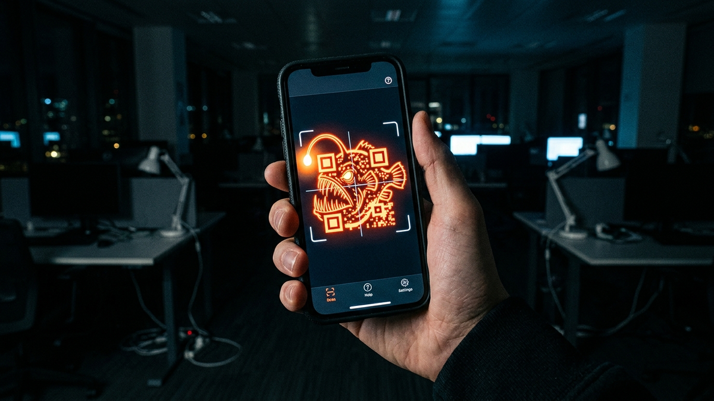

Alright, let's cut the crap. For years, I've told people to watch out for suspicious links and emails with bad grammar. That was the game. We got pretty good at it, and the email security gateways we admins manage got even better. But the bad guys are lazy and smart, a dangerous combination. They realized, why try to sneak a text-based link past a multi-million dollar security system when you can just hide it in plain sight?
That's where the QR code comes in. That innocent-looking black and white square you use to view a restaurant menu or connect to Wi-Fi is now the scammer's favorite new weapon. They've turned a tool of convenience into a Trojan Horse. This attack is called "quishing"—a portmanteau of QR and phishing—and it's exploding for one simple, terrifying reason: it works.
This guide is not a boring technical paper. It's a field manual from someone who has been in the trenches for 15 years, cleaning up the messes these attacks cause. I'm going to show you exactly how quishing works, the real-world scams I see every day, and the no-BS steps you and your company need to take to shut it down. Pay attention, because the next scan could be the one that costs you everything.
Let's get this straight. Quishing is just phishing with a costume on. The goal is the same: steal your credentials, your money, or your data. The delivery method is just different. Instead of clicking a hyperlink that says "Click Here," you're scanning a QR code with your phone. The real danger isn't the code itself; it's the psychological and technical blind spots it exploits.
Think about your company's email security. It's like a high-tech fortress gate. It uses powerful scanners to read every piece of text in an email, inspect every link, and check it against massive databases of known malicious sites. But a QR code? To that expensive security gateway, it's just a harmless image file, like a company logo in an email signature. It's a ghost. The malicious payload sails right past your corporate defenses and lands directly in the user's inbox, waiting for a single, curious scan.
The second part of the trap is you. We've been conditioned for years to trust QR codes. We use them for contactless payments, event check-ins, and pulling up menus. The action of pulling out our phone and scanning is muscle memory. Scammers know this. They are weaponizing your trust and your habits against you. They're counting on you to scan first and think later. This bypasses the most important security filter of all: your own suspicion.
The final piece of the puzzle is where the attack executes: on your mobile phone. Your laptop is probably locked down with corporate security software, but your phone is a wild card. It has access to your personal banking apps, your corporate authenticator app (like Microsoft Authenticator or Google Authenticator), your contacts, and your personal email. When you scan a malicious QR code, you're taking a threat that arrived in a secure corporate environment and detonating it on a far less secure, highly personal device. It's the perfect storm, and attackers are cashing in on it every single day.
Theory is one thing, but seeing the enemy's tactics in the wild is another. These aren't made-up scenarios; these are the real-world attacks that my team and I deal with constantly. The scammers are getting incredibly creative, blending their attacks into everyday situations to lower your guard.
The most common one targeting businesses right now is The "IT Help Desk" MFA Reset. An email lands in your inbox. The branding is perfect—it has your company logo and the sender name looks legitimate. The message creates a sense of urgency, claiming a "security upgrade" requires you to re-sync your Multi-Factor Authentication (MFA). But instead of a link, there's a QR code. The instructions say, "For enhanced security, please scan the code with your phone to enroll in the new system." You scan it, and your phone's browser opens a pixel-perfect clone of your company's Microsoft 365 or Google Workspace login page. You enter your username, password, and the six-digit code from your authenticator app. Game over. The attacker just harvested your credentials and your live MFA token, giving them full access to your account.
Another classic is The "Parking Meter" Payment Scam. You park your car in a city lot and see a QR code on the meter to "Pay Here." What you don't realize is a scammer has slapped a high-quality sticker with their own malicious QR code over the real one. You scan it, and it takes you to a slick, professional-looking payment site. You enter your name, license plate, and credit card details. The site might even say "Payment Successful." In reality, you've just handed your credit card information directly to a criminal, and you're about to get a parking ticket because you never actually paid the city.
We're also seeing a huge rise in The "Free Public Wi-Fi" Trap. You're at an airport, hotel, or coffee shop and see a poster with a QR code promising fast, free Wi-Fi. You scan it, expecting a connection portal. Instead, one of two things happens. It might prompt you to install a "security certificate" or "connector app" to use the network, which is actually spyware. Or, it connects you to a rogue Wi-Fi hotspot controlled by the attacker, who can now perform a "man-in-the-middle" attack, intercepting all the unencrypted data sent from your device.
💡 Expert IT Tip: Disable automatic URL opening. Your phone's native camera app often has a setting to just show you the URL from a QR code without immediately trying to open it in a browser. For an extra layer of protection, use a dedicated QR scanner app like the one from Trend Micro or Bitdefender. These apps are designed with security in mind and will show you the full, un-shortened URL and warn you if it's on a list of known malicious sites *before* you open it.
To really defeat an enemy, you have to understand how they think and how their weapons work. A quishing attack isn't just a simple link in a picture; there are layers of deception designed to fool both you and any automated security systems that might be watching. It's a shell game, and every step is calculated.
First is URL Obfuscation and Redirection. The URL embedded in the QR code is almost never the final malicious destination. Attackers know that if they use a known bad domain, it might get flagged. So, they play games. They'll often use a legitimate URL shortening service like Bitly or TinyURL. The QR code points to this shortened link. When you visit it, the shortener service redirects you to another intermediary site, maybe a compromised WordPress blog or a temporary cloud server. This second site then uses a piece of JavaScript to perform a final, silent redirect to the actual phishing page. This multi-step chain makes it incredibly difficult for security tools to trace the path and identify the threat ahead of time.
Next comes the Landing Page Deception. This is where the real artistry comes in. The attackers will use tools like `HTTrack` to create a perfect, bit-for-bit clone of a legitimate login page—think Microsoft, your bank, or your company's single sign-on (SSO) portal. They'll host it on a domain that looks plausible at a quick glance. They use tricks like "typosquatting" (`microsft.com` instead of `microsoft.com`) or using subdomains to create a false sense of security (`microsoft.security-update.com`). An even more advanced technique is the Punycode attack, where they use Cyrillic or other international characters that look identical to Latin characters (e.g., using the Cyrillic 'а' instead of the Latin 'a') to register a domain that is visually indistinguishable from the real one.
Protect your identity and browse privately with Surfshark One - the all-in-one security suite.
GET 60% OFF SURFSHARK NOWFinally, there's the Payload Delivery. While credential theft is the most common goal, it's not the only one. The QR code can be a delivery mechanism for all sorts of nasty payloads. On an Android device, a QR code can link directly to an `.apk` file, tricking the user into installing a malicious application outside of the Google Play Store. For both Android and iOS, the link could lead to a page that exploits a zero-day vulnerability in the web browser to install spyware without any further user interaction. In other cases, the goal is to trick you into authorizing a malicious OAuth app, giving it persistent access to your Google Drive or Microsoft 365 files. The possibilities are vast, making the initial scan a high-stakes gamble.
All the fancy security software in the world can't protect you if you willingly scan a malicious code. The ultimate defense against quishing isn't a piece of software; it's a healthy dose of suspicion and a simple, repeatable process. This is your personal battle plan. Follow it, and you'll be able to spot and sidestep these traps with ease.
First and foremost, Rule #1: Treat QR Codes Like Strange Email Attachments. You wouldn't open a `.zip` file from a random stranger, so why would you scan a QR code taped to a bus stop? Before you scan, engage your brain and ask three questions: Who put this here? Do I trust them? Does the context make sense? A QR code printed on the official packaging of a product you just bought is probably safe. A QR code in an unsolicited email promising you a prize is a massive red flag.
Second, Always Preview, Never Pounce. Modern smartphones are built with a small safety feature. When you point your camera at a QR code, it shows you a preview of the domain name before you tap to open it. *This is the most critical moment in your defense.* Read that URL carefully. Does it look right? Is it a shortened URL (like bit.ly or tinyurl)? If it's a shortened link from an untrusted source, do not open it. If it's for your bank but the domain is `bankofamerica.secure-login.net` instead of `bankofamerica.com`, abort the mission. That preview is your last chance to spot the fake.
Third, establish a hard rule: Never Scan QR Codes in Emails for Security Actions. I'll say it again for the people in the back. Your IT department, your bank, or any legitimate company will *never* ask you to reset your password, re-validate your MFA, or confirm your identity by scanning a QR code sent in an email. That is not a standard security procedure anywhere. If you get an email like this, don't just delete it. Forward it to your IT or security department so they know what kind of attacks are targeting the company. Then, delete it.
Finally, practice good digital hygiene. Use a password manager to generate and store unique, complex passwords for every single one of your accounts. This way, even if you do get tricked and give up one password, the criminals can't use it to access your other accounts. And for the love of all that is holy, use strong Multi-Factor Authentication—preferably an authenticator app or a physical security key like a YubiKey, not just SMS texts which can be intercepted.
Alright, admins, this one's for us. Protecting a single user is one thing; protecting an entire organization of a few hundred or a few thousand people who are all busy and prone to clicking is a whole different beast. You can't just rely on telling people to "be careful." You need to build a layered defense system that assumes failure and protects the organization anyway.
Your first and most important layer is Aggressive and Continuous User Training. This isn't a once-a-year, check-the-box PowerPoint presentation. You need to run your own internal phishing simulations, and you absolutely must include quishing templates. Send your users fake emails with QR codes for MFA resets, cafeteria coupons, or fake HR policy updates. Track who scans them. The people who fail need immediate, one-on-one follow-up training to explain the risk. The goal isn't to shame them; it's to build a culture of healthy paranoia. Your users are your last line of defense; you have to train them like it.
The second layer is technical, and it's non-negotiable in the modern workplace: Deploy a Mobile Threat Defense (MTD) solution. Since quishing attacks detonate on mobile devices, you need security controls on those devices. MTD solutions like Microsoft Defender for Endpoint (which has a mobile component), CrowdStrike Falcon for Mobile, or Lookout act like an EDR (Endpoint Detection and Response) agent for iOS and Android. If a user scans a malicious QR code and their browser tries to connect to a known phishing site or a command-and-control server, the MTD agent can block the connection and alert your security team. It's the only real way to get visibility and control over threats that bypass your email gateway.
Third, Harden Your Email Security Gateway. While traditional gateways struggle with images, the leading vendors are catching on. Talk to your reps at Proofpoint, Mimecast, or Abnormal Security. Ask them specifically about their roadmap for image-based threat detection using Optical Character Recognition (OCR) and computer vision. Some can already flag emails that contain QR codes and have other suspicious indicators (e.g., sent from a new domain, contains urgency-laced keywords). You can often build custom rules to quarantine or add warning banners to any external email containing a QR code, forcing the user to think twice.
💡 Expert IT Tip: If you're a Microsoft 365 shop, you can create a powerful mail flow rule in the Exchange admin center as a stopgap. Create a rule that triggers if: The message is received from 'Outside the organization' AND The message body or subject includes 'QR code' OR 'scan the code' AND any attachment's content includes 'QR'. As an action, set it to 'Prepend the subject with [EXTERNAL QR CODE]' and 'Apply a disclaimer to the message' with a custom warning text telling the user to never scan QR codes for logins or payments. This doesn't block the email, but it shoves a big, bright warning sign in their face.
Let's bring it all home. The game has changed. The simple text-based phishing email is being replaced by a far more elegant and deceptive weapon. Quishing works because it slips through the cracks in our technology and our psychology. It bypasses billion-dollar email filters by dressing up as a harmless image, and it preys on the trust we've built up over years of using QR codes for convenience.
Beating it doesn't require a magic bullet. It requires a fundamental shift in how we view these little black and white squares. For individuals, it's about trading a moment of convenience for a moment of critical thought. It's about treating every QR code with the same suspicion you'd give a random USB stick you found on the ground. Preview the link. Verify the source. Trust your gut.
For businesses, it's about recognizing that your security perimeter now extends to every employee's pocket. It means investing in modern defenses like Mobile Threat Defense and, more importantly, investing in your people. Train them, test them, and empower them to be your greatest security asset. The threats will always evolve, but a smart, skeptical, and well-prepared human is a defense that never goes out of date. Don't let a simple square outsmart you.
Don't wait for the headlines. Our Private Telegram Channel delivers real-time AI security updates and digital wealth strategies before they go viral. Stay protected. Stay ahead.
⚡ JOIN THE 1% NOWNo sign-up required. Instantly check risks, analyze AI text, or calculate your digital finances.